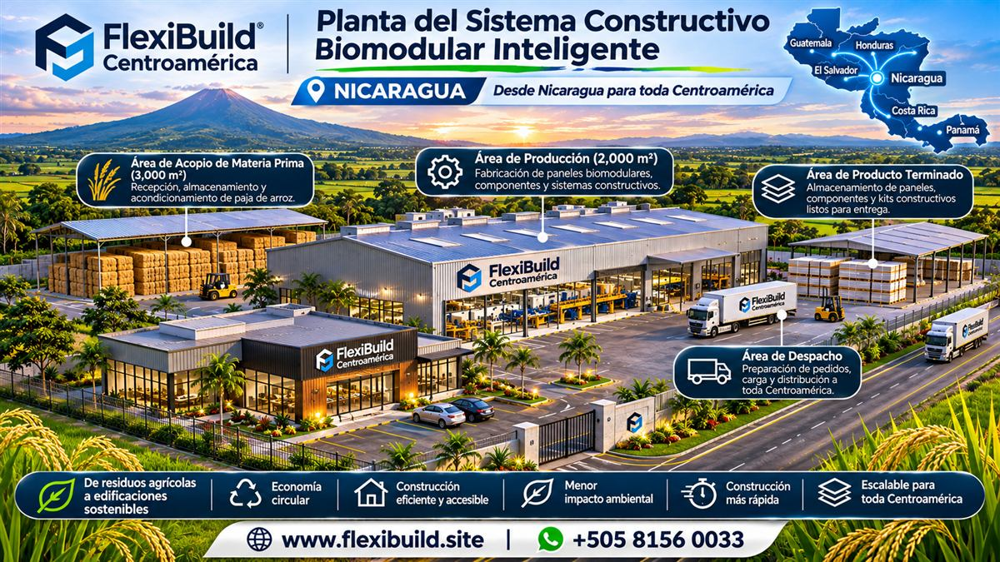

Nicaragua · Centro regional de producción propuesto
Oportunidad de inversión para la producción biomodular
FlexiBuild busca empresas, inversionistas y aliados estratégicos interesados en evaluar una planta propuesta para producir paneles de fibras agrícolas y desarrollar soluciones constructivas para Nicaragua y otros mercados de la región.
El proyecto está en desarrollo. Esta página no ofrece rendimientos ni constituye una oferta financiera. El alcance, plan de negocio, necesidades de financiamiento y condiciones de participación requieren análisis y debida diligencia.
Solicitar información preliminar
La propuesta
Producción local vinculada con necesidades constructivas regionales
La propuesta contempla evaluar la producción de paneles de fibras agrícolas, el desarrollo de sistemas constructivos, ventas regionales y proyectos residenciales y comerciales. Se estudiaría el uso de paja de arroz de origen local y la fabricación más cercana a los mercados de construcción de la región.
Producción
Evaluar alcance de planta, equipos, licencias, integración y acuerdos de suministro.
Desarrollo de producto
Coordinar sistemas constructivos, ingeniería, pruebas y aplicaciones.
Desarrollo de mercado
Evaluar demanda, clientes, distribución y requisitos de cada país.
Análisis del proyecto
Revisar viabilidad, estructura de financiamiento, plan de negocio e hitos siguientes.
Para potenciales aliados
Conversemos sobre la oportunidad
Empresas, fondos, instituciones financieras e inversionistas pueden contactar a FlexiBuild para conversar sobre el alcance, la estructura propuesta, los supuestos de mercado y los próximos pasos. Las condiciones de participación y la información financiera se compartirán directamente conforme se desarrollen.
Esta página no establece montos de inversión, rendimientos, capacidad de producción ni fecha de operación. La instalación propuesta no está construida ni operativa.
Consultar por WhatsApp Escribir a FlexiBuild